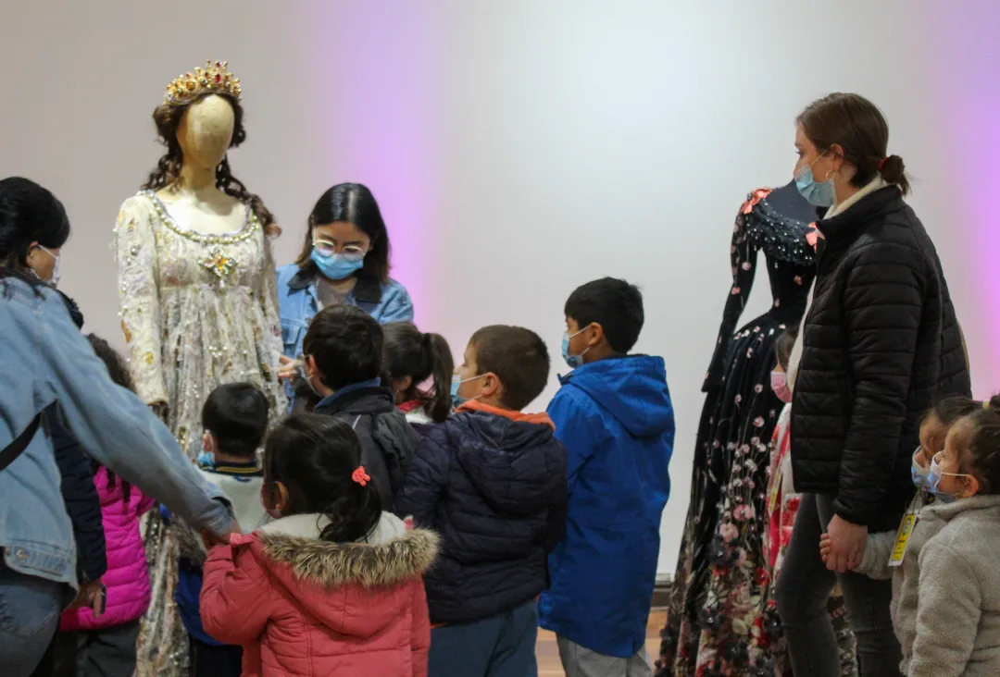
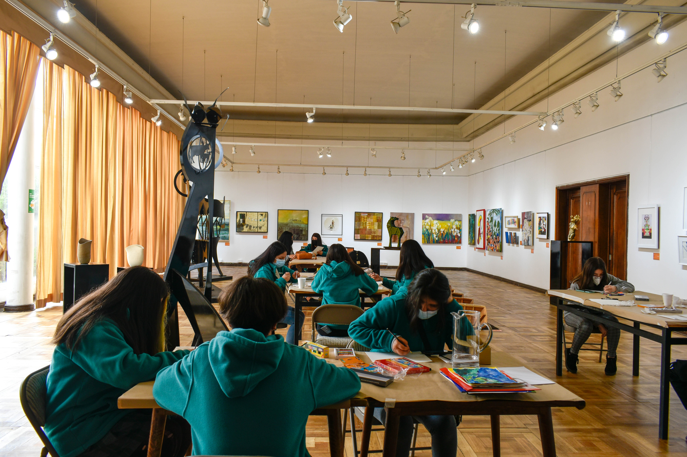

He desarrollado diversas mediaciones en instituciones culturales del sur de Chile, principalmente en la región de Los Lagos. En cada una de ellas he buscado acercar las exposiciones a distintos públicos, generando vínculos significativos con comunidades escolares, asociaciones de adultos y público general. Además del recorrido o visita guiada, las mediaciones poseen una actividad especialmente pensada para el grupo visitante, permitiendo que la experiencia sea no solo informativa, sino también participativa y reflexiva en torno a los contenidos de la muestra y los lineamientos de las instituciones.
- Taller Insectopedia: Insectos y Artes | Biblioteca Municipal de Purranque, 2025.
- Día de Los Patrimonios | Archivo de La Unión, 2025.
- Exposición Vestuario y Patrimonio Teatro Municipal de Santiago | Corporación Cultural Osorno
- Taller mediación ROJO colaboración con Museo de la Solidaridad Salvador Allende | Corporación Cultural Osorno, 2021.
- Exposición | Museo Interactivo Osorno, 2021.
- Exposición Habitar: espacios y memorias | Corporación Cultural Osorno, 2021.
- Exposición Chilarte | Corporación Cultural Osorno, 2021.
- Exposición Trama | Corporación Cultural Osorno, 2021.
- Conversatorio Trama | Corporación Cultural Osorno, 2021.




